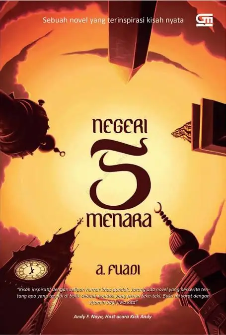

Bedah Buku - Negeri 5 Menara
Ditulis oleh: Ahmad Fuadi

Sinopsis:
"Negeri 5 Menara" adalah novel karya Ahmad Fuadi yang mengisahkan perjalanan hidup seorang pemuda bernama Alif Fikri. Cerita ini dimulai dari masa kecil Alif di sebuah desa kecil di Sumatra Barat, di mana ia bermimpi untuk melanjutkan pendidikan ke pondok pesantren terkenal di Jawa, yaitu Pondok Modern Gontor. Dengan tekad yang kuat dan semangat pantang menyerah, Alif berjuang melewati berbagai rintangan untuk mencapai mimpinya.
"man jadda wajada - Siapa yang bersungguh-sungguh akan berhasil."
kalimat itu menjadi semangat utama dalam buku ini. Kisah yang ditulis berdasarkan pengalaman nyata ini sangat menginspirasi, terutama bagi pelajar yang sedang mengejar mimpi mereka. Penulis berhasil menyampaikan pesan-pesan moral melalui narasi yang hidup
Buku ini cocok dibaca oleh remaja dan orang dewasa yang sedang mencari motivasi hidup. Cerita persahabatan, perjuangan dan cinta belajar membuatnya menyentuh dan relevan bagi pembaca di berbagai usia
<- Kembali ke Berandas